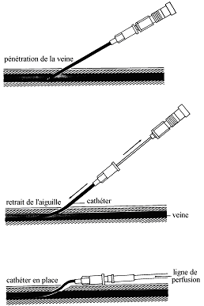

Le catheter court veineux : la perfusion intraveineuse
Definition
La perfusion peripherique est l’introduction d’un catheter court dans une veine superficiel qui permet d'administrer chez un patient des solutes et/ou des medicaments de faeon continue ou discontinue.
Cadre legislatif
- Soin infirmier sur prescription medicale : art. R.4311-7 decret 2004-802 du 29/07/2004.
Indications
- Disposer d’une voie d’abord veineuse en cas d’urgence et de reanimation.
- Administration de medicaments.
- Apport hydrique et/ou electrolytiques.
- Transfusion de produits sanguins labiles.
- Alimentation parenterale.
Materiel
- Catheter court en fonction du capital
veineux, de la duree de la perfusion, du debit souhaite, du produit
perfuse :
| Les catheters courts | |||
| Couleur | Gauge | Diametre | Debit maximal |
| Jaune | 24 Gauges | 0,65 mm | 24 mL/min |
| Bleu | 22 Gauges | 0,75 mm | 33 mL/min |
| Rose | 20 Gauges | 0,95 mm | 63 mL/min |
| Vert | 18 Gauges | 1,15 mm | 110 mL/min |
| Gris | 16 Gauges | 1,55 mm | 215 mL/min |
| Orange | 14 Gauges | 1,85 mm | 315 mL/min |
- Solute a perfuser sous forme de poche pour perfusion.
- Tubulure sterile.
- Garrot.
- Protection papier absorbante a usage unique.
- Pied a perfusion.
- Compresses steriles.
- Produits pour l’antisepsie :
- Respecter les memes gammes de produit : polyvidone iodee ou chlorexidine.
- Savon antiseptique.
- Serum physiologique ou eau sterile.
- Antiseptique dermique.
- Gants :
- Gants non steriles s’il n’y a pas de palpation du point de ponction apres l'antisepsie.
- Gants steriles s'il y a palpation du point de ponction apres l'antisepsie cutanee (mesures d'hygienes et d'asepsie plus large). Il est donc preferables pour des raisons d'hygiene et pour l'asepsie, d'utiliser des gants steriles.
- Pansement occlusif sterile transparent (Opsitee, Tegaderme).
- Tondeuse.
- Sac a elimination des dechets papier et materiel non contamine.
- Sac a elimination des dechets d'activites de soins a risques infectieux.
- Conteneur a dechets contamines piquants et tranchants.
- Desinfectant de surface et chiffonnette.
- Necessaire a l'hygiene des mains.
Realisation du soin
La manipulation de la ligne de perfusion, du robinet ou d'une rampe de perfusion se fait toujours avec des compresses steriles imbibees d’antiseptique puisque les antiseptiques diminuent la colonisation des embases du catheter : une dessous pour tenir le dispositif, une autre pour tourner le robinet et manipuler les bouchons.1
1Recommandations pour la pratique clinique “Prevention des infections liees aux catheters veineux peripheriques”, SFHH – HAS, novembre 2005. (R 36)
La manipulation de la ligne de perfusion, du robinet ou d'une rampe de perfusion se fait toujours apres un lavage antiseptique des mains.2
2(article 86, 100 recommandations pour la surveillance et la prevention des infections nosocomiales, Ministere de l'Emploi et de la Solidarite. Secretariat d'Etat a la Sante et a l'action sociale Comite Technique des Infections Nosocomiales - 2eme edition, 1999)
- Verifier la prescription medicale.
- Prevenir le patient.
- Effectuer un lavage simple des mains ou effectuer un traitement hygienique des mains par frictions avec une solution hydro-alcoolique : hygiene des mains.
- Installer le materiel apres verification des dates de peremptions et de l'integrite des emballages.
- Installation sur une surface propre et desinfectee au prealable.
- Installer les poubelles de tri des dechets au pied du lit du patient.
- Respecter le triangle d'hygiene, de securite et d'ergonomie : Propre (materiel) – Patient – Sale (poubelles).
- Ouvrir aseptiquement les paquets de compresses et les imbiber avec le savon antiseptique (mettre un peu de serum ou eau sur le savon antiseptique afin de le diluer), le serum physiologique, l’antiseptique dermique, laisser un paquet de compresses seches.
- Ouvrir le sachet des gants steriles.
Deposer dans le champ sterile des gants, le catheter (cathlon), le pansement transparent occlusif sterile, la poche pour perfusion, la tubulure sterile.
- Mettre le garrot et verifier la presence d’un pouls arteriel (en l'absence d'un pouls arteriel en dessous du garrot, le desserer).
- Choisir la veine a perfuser : prefere les veines radiales et cubitales aux veines du dos de la main trop fragiles ou aux veines du pli du coude que l’on reserve aux situations d’urgence.
- Favoriser la vasodilatation de la veine, ce qui rend le geste plus facile :
- Demander au patient de serrer le poing.
- Mettre le bras en declive.
- Tapoter la veine.
- Mettre un linge chaud sur l’avant bras (si necessaire)
Choix de la veine du membre superieur


- Si besoin, depiler la zone a perfuser avec une tondeuse ou aux ciseaux, ne pas raser.
- La depilation doit toujours etre realisee dans le sens du poils pour eviter les folliculites.
- Proteger le lit en plaeant le champ absorbant sous la zone de ponction.
- Effectuer un lavage antiseptique des mains ou effectuer un traitement hygienique des mains par frictions avec une solution hydro-alcoolique : hygiene des mains.
- Mettre les gants steriles.
- Pratiquer une antisepsie de la peau en 4 temps :
- Aller de l'exterieur vers l'interieur = faire un cete, l'autre cete et terminer par le milieu (site de ponction).
- Ne jamais repasser a un meme endroit.
- Utiliser une compresse par passage puis la jeter dans le sac a dechets contamines.
- Respecter le temps de contact de l'antiseptique.
- Nettoyer avec le savon antiseptique.
- Rincer avec le serum physiologique ou l'eau sterile.
- Secher avec des compresses steriles seches.
- Appliquer l'antiseptique dermique.
- Preparer la perfusion : purger la tubulure et disposer la poche sur le pied a perfusion en veillant a rester sterile (le temps utilise pour la preparation en sterile de le perfusion permet de respecter le temps de contact de l'antiseptique).
- Avant la pose, faire glisser legerement le mandrin le long du catheter afin d’eviter une adherence lors de la pose et ainsi, faciliter la montee du catheter.
- Si palpation du point de ponction apres l'antisepsie il est preferable de tamponner l'extremite des doigts du gants sterile sur une compresse imbibee d'antiseptique dermique, ce qui permet de ne pas enlever du produit antiseptique appliquee et egalement, s'assurer d'une bonne asepsie.
- D’une main tendre la peau et maintenir la veine, de l’autre main, introduire le catheter biseau vers le haut.
- Placer une compresse sterile seche sous le cathlon.
- Desserrer le garrot.
- Retirer le mandrin et l'eliminer immediatement dans le container a dechets contamines piquants.
- Adapter la tubulure au cathlon.

- Proteger le site de ponction avec le pansement occlusif sterile transparent.
- Verifier la bonne position du catheter en realisant un reflux (mettre la poche pour perfusion plus bas que le point de ponction et verifier la venue du sang dans le catheter).
- Proteger le site de ponction avec le pansement occlusif sterile transparent.
- Regler le debit.
- Noter sur le pansement la date de pose du catheter.
- Jeter le materiel et desinfecter le materiel utilise ainsi que le plan de travail.
- Effectuer un lavage simple des mains ou effectuer un traitement hygienique des mains par frictions avec une solution hydro-alcoolique : hygiene des mains.
- Transmission : date de pose, taille du catheter, site de ponction.
Risques et complications
- Infection.
- Œdeme.
- Lymphangite.
- Extravasation.
- Hematome.
- Obstruction de la perfusion.
- Adherence du mandrin.
Surveillances et evaluations
- Point de ponction, verifier l’absence de signe d’inflammation : douleur, rougeur, chaleur, œdeme.
- Verification de la permeabilite et de l’integrite de la perfusion.
- Verifier le debit.
- Verifier que la ligne de perfusion ne soit pas coudee.
- Surveillance de la temperature.
- Changement de catheter veineux courts toutes les 72 heures.Temperature.